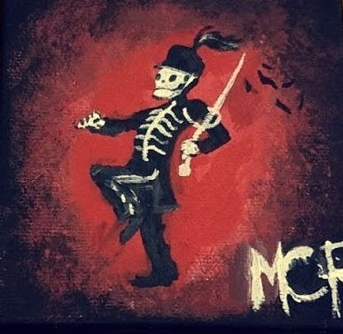
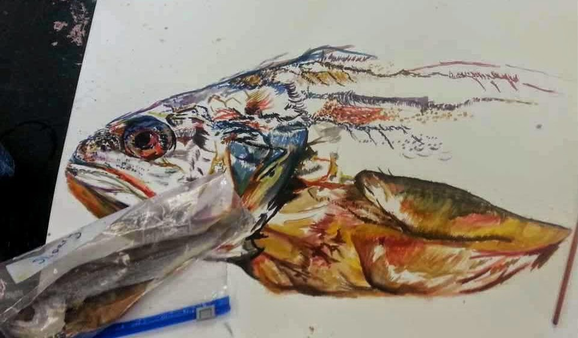
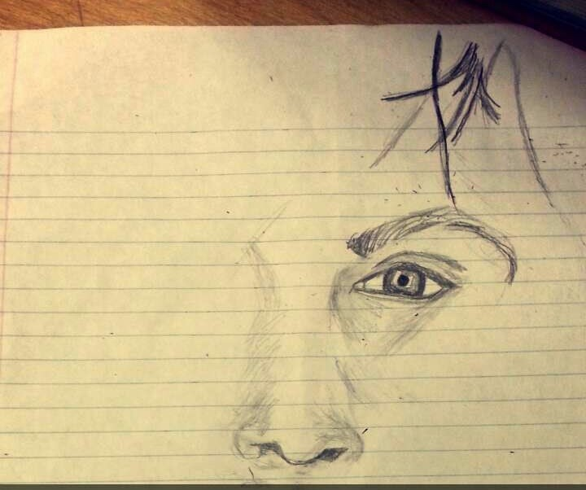
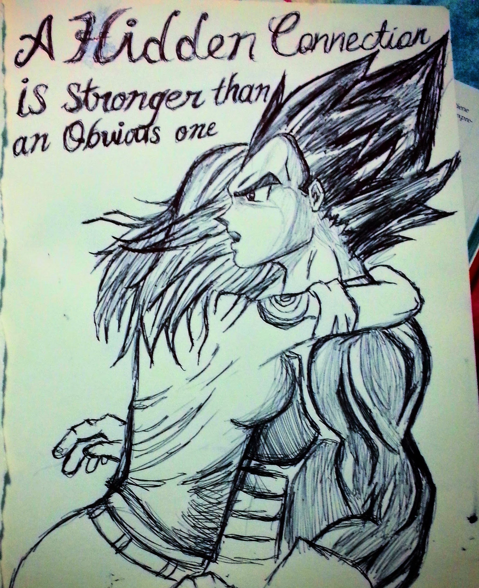
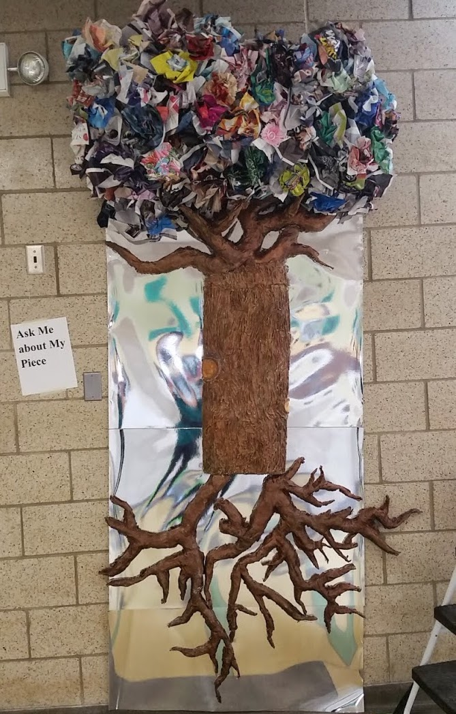
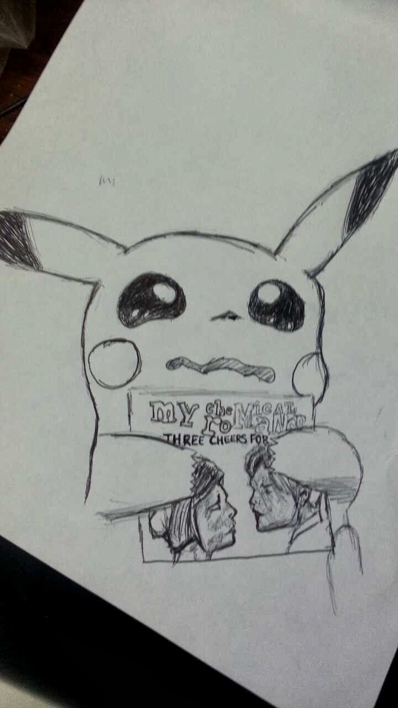
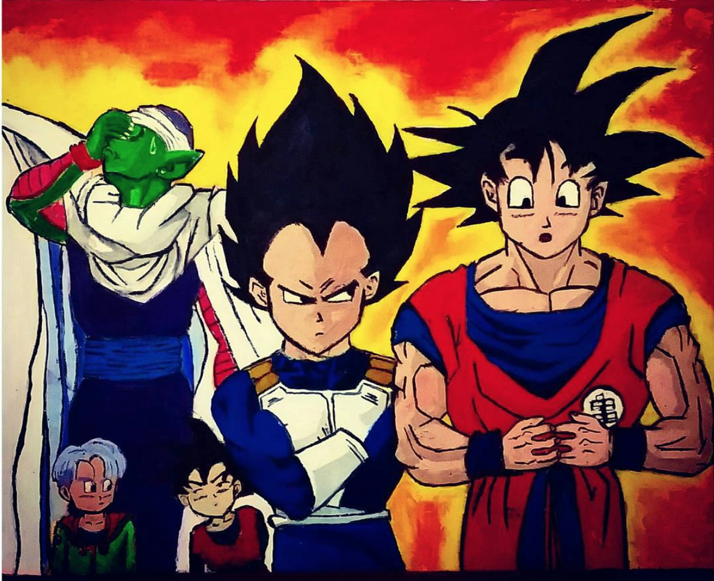

Painting and drawing (Or art in general) was something I've basically known my entire life. I might not be the best...but I am not the worse. Thankfully, I was lucky enough to attend public schools that did not cut out their art classes. I did drawings here and there. But, it was not until I started High School that I started to expand my skills. I had a wonderful teacher, Mrs. Lopez, that made art more like a personal challenge. She was so hard to please, however, she gave us so much feedback that it only made you a better artist. With her, I was able to experiment with all sorts of mediums. My love towards art grew even bigger. (You can see the different mediums on the table below). I had the opporturnity to experiment with watercolor and it was not that hard like I expected. I even believe watercolor is one of the easiest mediums to start with, if you want to start painting. At the bottom of this page you can find a short YouTube video that will teach you how to paint a easy sunset using watercolor. Or you can click here so you can skip to that part. With Art you can basically create anything you want and make it interesting. Take for example the fish that Mrs Lopez made us paint. Never in my mind I would think a dead fish could be so colorful or interesting.

There are so many possibilities. So much colors and so many ways to interpret it that you could never go wrong with art. My favorite part about art, besides the color, is that you can really interpreate a piece however you want. Not everyone sees or feels the same thing as you do. Therefore, a piece might have a different meaning to you than someone else. It's almost like the meaning that you depict from the piece is a reflection of your state of mind. Therefore, it is unique.
 | Medium | Material |
|---|---|
| Painting | Water color |
| Oil base paint | |
| Acrylic | |
| Drawing | Pencil |
| Pen | |
| Charcoal | |
| Pastel | |
| 3D | Wire |
| Coardboard | |
| Clay | |
| Plaster | |
| Other | Digital Media |
| Face Paint |
There are so many things I have done in my free time and in school, that I do not know if they are consider accomplishments. I really do not have one big accomplishment. I did win three years in a row the yearbook cover competation. But, I do not consider that an accomplishment. However I do have favorite pieces that I like. One of them is a tree installation I did it in my senor year. I thought, it was a simple project with a significant meaning. You really have to see it in person to see the little details.. but, anyway, It was made with plaster and newspapers and magzines. In a nutshell, The roots, are supposed to signify our roots, our culture. And then the tree trunk was supposed to be like how everyone is trying to guide us to the same path (the little tree trunk patterns guiding up) and finally, the tree trunk, that is our final result. How everyone ends up with a uniquely future. Since, the tree top was made of magazines it was supposed to represent what we coould become. My next piece, was more like a doodle, I was in lunch and listening to some My Chemical Romance and my hand just started to draw this. I was proud, because I was able to do this with a pen and very little reference. Then Finally, my Dragon Ball Z painting. I love this one because its based on my favorite anime and it was my first time painting with an oil base paint.
  However, my most recent proudest accomplishment was my self portrait. I could draw cartoons, or still figures. But, I could not draw people. They always came out of proportion. Thus, when we had to do a self portrait for a painting class, I panicked. I tried my best, took my time, and to my surprise it came out alright. You can slide your curser on the photo to see the painting. Also, if you want, you can check out my progress in my Instagram account by Clicking Here
Anyone, can draw and paint. There is no wrong, or right way to do it. You just have to go with the flow. I personally think it is better if you do this with some music and somewhere peaceful. You can try and follow this simple YouTube video to try and paint a beautiful sunset. All you really need is: